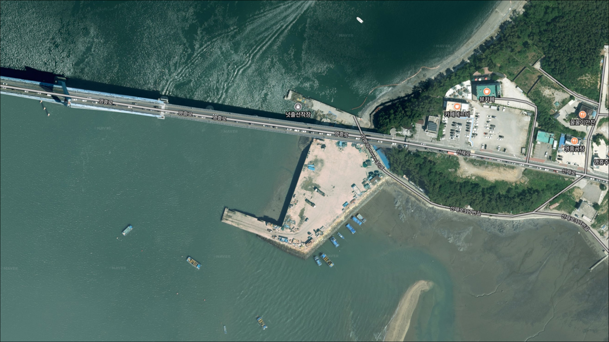
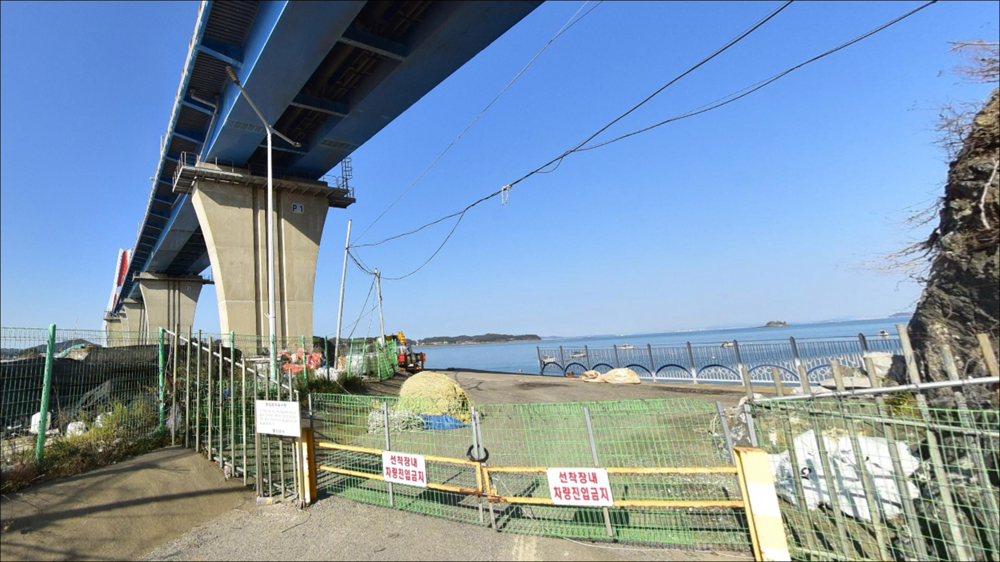
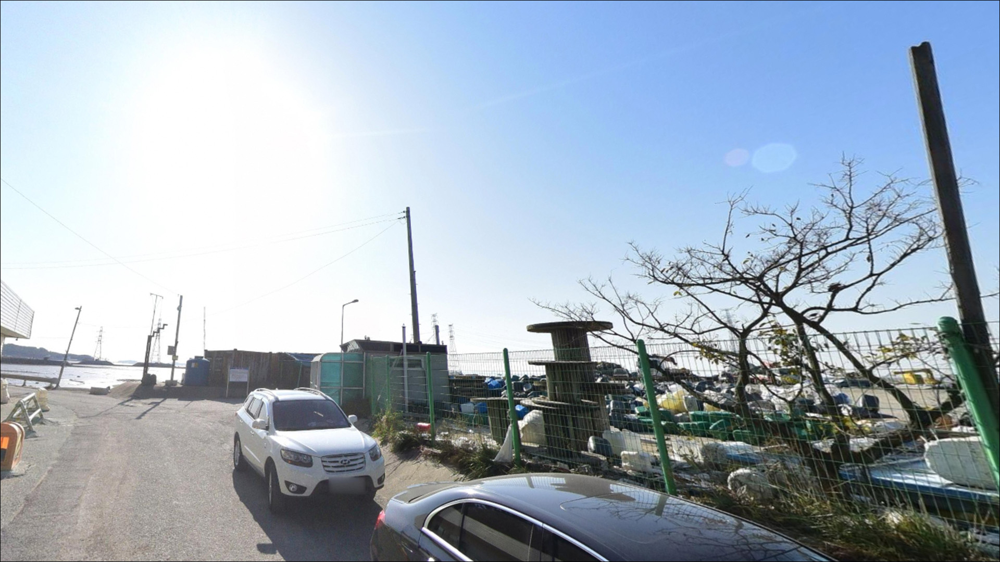
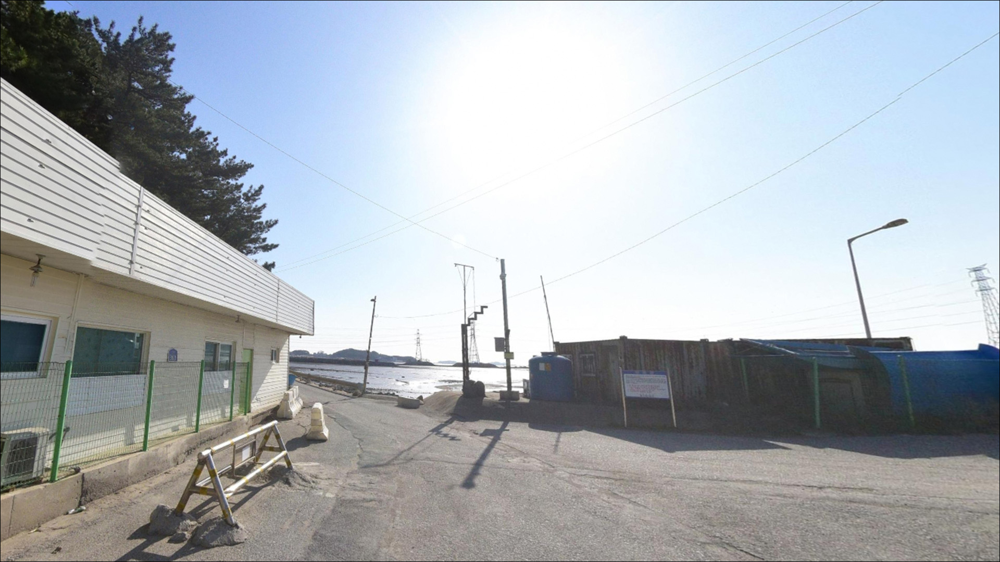
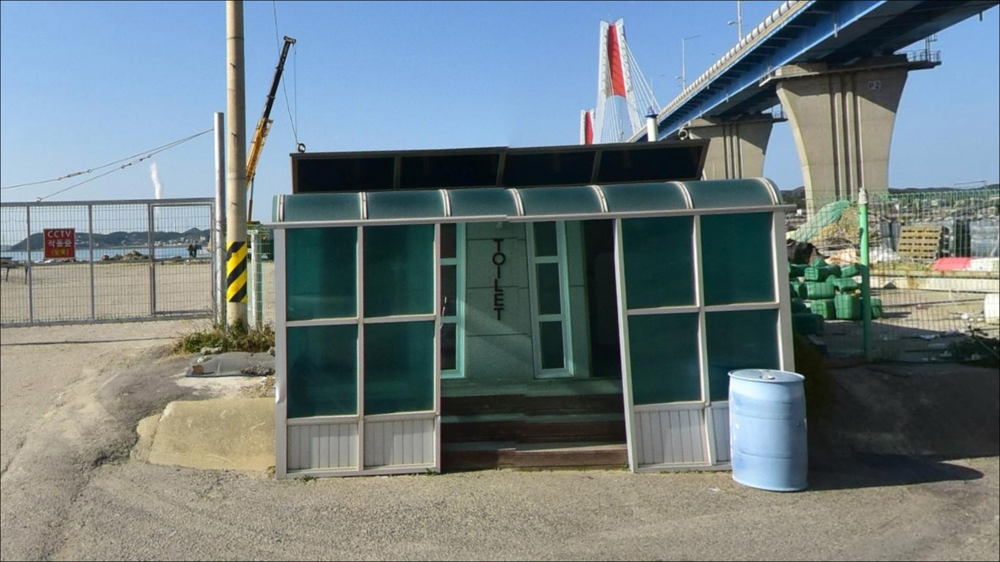
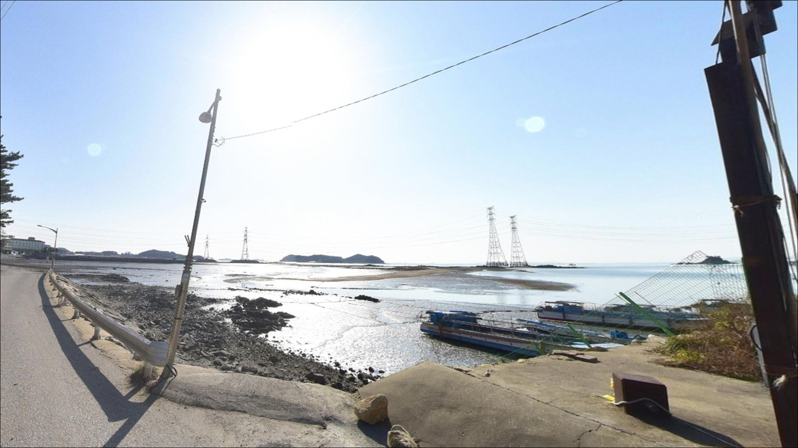
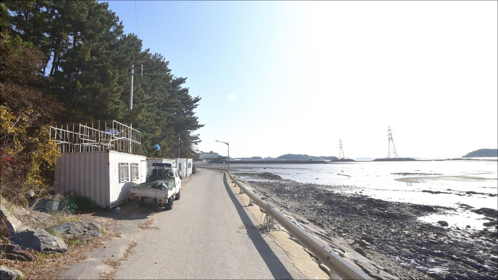
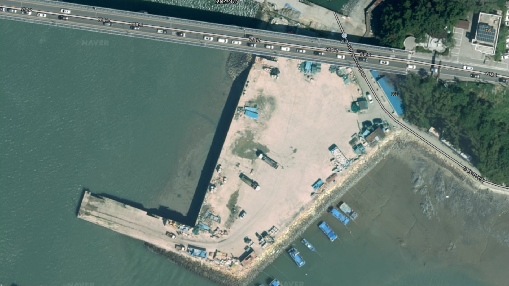
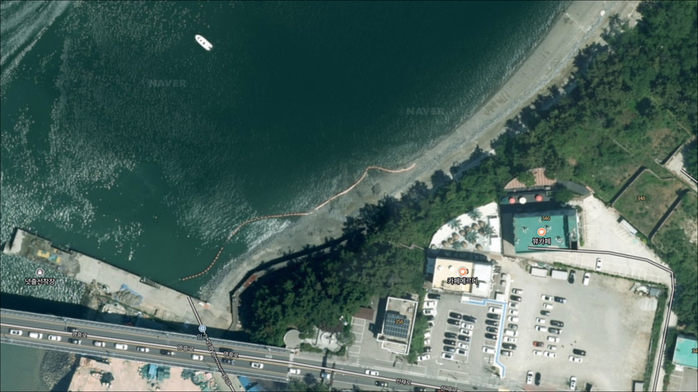

넛출선착장, 영흥도 인천 옹진군 고요한 수면을 바라보며 차박, 낚시를 즐기기 좋은 해안
이 페이지에는 광고(제휴 링크 포함)가 있으며, 광고 링크를 통해 구매하면 운영자가 판매 수익 또는 수수료를 받을 수 있습니다. 포인트 사진: 카카오맵 스카이뷰·로드뷰. 이 페이지의 지도·사진 이미지는 카카오맵의 실제 서비스 이미지와 다를 수 있습니다.


포인트 안내
넛출선착장
인천광역시 옹진군 영흥면 선재리 636-24
물때 확인 없이 이 포인트에 들어서면,
사리 전후 수로 조류가 너무 세서
어떤 채비를 써도 컨트롤이 불가능해집니다.
선재도와 영흥도 사이 수로 특성상
물때 변화에 따라 낚시 여건이
극단적으로 달라지는 구조입니다.
이 글은 넛출선착장의 진입 환경과
물때 판단 기준, 낚시 방식 적합성,
차박 체류 조건에 집중합니다.
조황 단정이나 특정 어종 보장은
이 글의 범위에 포함되지 않습니다.

1. 진입 동선과 포인트 접근성
넛출선착장은 시화방조제를 거쳐
선재대교를 건넌 뒤,
선재도 내부 도로를 따라
북쪽 끝까지 이동하는 동선으로 찾아갑니다.
영흥대교 직전 선재도 측으로
포장도로가 연결되어 있어
진입 자체는 크게 어렵지 않은 편입니다.
다만 선착장 직전 구간은
마을 안길 수준의 좁은 도로가
이어질 가능성이 있습니다.
대형 SUV나 차박 장비를 갖춘 차량이라면
출발 전에 위성지도로
진입로 폭과 회차 가능 여부를
미리 파악해두는 것이 좋습니다.
주차는 선착장 입구 인근 공터를
활용하는 방식이 일반적이지만,
소규모 나루터 특성상 2~3대 수용 수준으로
공간이 넉넉하지 않을 가능성이 있습니다.
어선 접안 동선을 막지 않는 자리를
먼저 확보하는 것이 기본 매너입니다.

2. 차박 환경과 야간 체류 여건
넛출선착장 일대는 민가 밀집도가 낮은
소규모 어촌 나루터 분위기입니다.
야간에는 차량 통행이 적어
비교적 조용한 환경을 기대해볼 수 있지만,
주차 공간이 좁은 만큼
차박을 메인으로 삼기에는 여건이
제한적인 포인트입니다.
영흥대교가 바로 인접해 있어
다리 조명의 간접 영향을 일부 받을 수 있습니다.
다만 선착장 자체의 가로등 수가
많지 않을 가능성이 있으므로,
야간 출조 시에는
개인 헤드랜턴을 반드시 챙겨야 합니다.
수로 방향으로 외항이 노출된 구조라
기상에 따라 바람 영향을 받을 수 있습니다.
낚시를 마치고 짧게 하룻밤 머무는 용도로는
활용 가능한 편이지만,
장시간 차량 체류는 선착장 이용객 통행과
마찰이 생길 수 있어 주의가 필요합니다.


3. 주변 편의시설 및 인프라 현황
선재도 내에는 편의점이 운영되고 있습니다.
GS25 선재도점과 CU 선재도점이
선재리 일대에 위치해 있어,
간단한 식음료나 기본 소품은
섬 안에서 해결이 가능한 편입니다.
다만 운영 시간은 현장 조건에 따라
달라질 수 있어 사전 확인이 필요합니다.
마트나 주유소 등 큰 규모의 인프라가 필요하다면
영흥대교를 건너 영흥도 방향으로
이동해야 합니다.
농협하나로마트 옹진군 영흥점이
영흥도 내에 위치해 있으므로,
식수·얼음·연료 등 주요 물자는
진입 전 영흥도 쪽에서 채우는 것이
효율적인 준비 방식입니다.
선재도 일대는 관광·숙박 시설이
일정 수준 갖춰진 지역이라
식당은 주변에서 확인이 가능한 편입니다.
낚시 전용 자급 물자인
채비 여유분과 비상약품은
출발 전에 미리 챙겨두는 것이 기본입니다.

4. 방문 전 반드시 챙겨야 할 준비사항
넛출선착장 방문 전 가장 먼저 확인할 것은
물때입니다.
선재도와 영흥도 사이 수로는
서해 조차의 영향을 직접 받는 구간으로,
사리 전후에는 조류가 크게 빨라져
채비 컨트롤 자체가 어려워집니다.
바다타임에서 선재리 기준 물때를 확인하고
조금 전후 또는 만조 전후를 기준으로
입장 시각을 잡는 것이 기본 전략입니다.
포인트명 '넛출'은 바위가 너출너출
줄지어 뻗어나간 지형에서 유래한 이름입니다.
선착장 주변 연안에 수중 암반이나 여밭이
분포할 가능성이 있어,
밑걸림이 잦은 편입니다.
봉돌과 채비 여분을 넉넉히 챙겨두는 것이
이 포인트 준비의 기본 조건입니다.
마을 선착장 구조상 어선 접안과
주민 통행이 이루어지는 공간입니다.
낚시 자리는 어선 동선과 어구에
접촉하지 않도록 잡는 것이 기본 매너이며,
야간 출조 시에는 선착장 바닥이
미끄러울 수 있으므로
발걸음에 주의가 필요합니다.
구명조끼는 선착장 포인트에서
반드시 착용해야 합니다.

5. 지형 기반 낚시 여건 분석
넛출선착장은 선재도 북단에서
영흥도를 마주보는 수로 구간에 자리합니다.
선박이 통항하는 수로 특성상
선착장 앞쪽으로 상당한 수심이
확보되어 있을 가능성이 있습니다.
발 앞보다 수로 방향으로 멀리 보낼수록
수심이 깊어지는 구조라,
장타 원투가 유효한 포인트입니다.
포인트명 어원처럼 선착장 주변 연안에는
수중 암반과 여밭이 섞여 있을 가능성이 있습니다.
이런 지형은 우럭이나 노래미처럼
암초 지형에 붙는 어종을
기대해볼 수 있는 환경이지만,
밑걸림이 심할 수 있어
채비 손실을 감수하는 준비가 먼저입니다.
조류는 물때에 따라 세기 차이가 크게 납니다.
조류가 흐르는 타이밍에는
수로 방향으로 채비를 내려보내는 방식이
이 지형 구조에 맞고,
정조 전후 짧은 시간이
채비 컨트롤이 가장 안정적인 구간입니다.
최신 조황은 방문 전에
반드시 검색해 보시기 바랍니다.


6. 원투가 안 되는 시간이라면
어떤 방식으로 공략해야 하나
이 포인트에서 가장 어울리는 방식은
원투낚시입니다.
수로 방향으로 채비를 멀리 던져
바닥을 탐색하는 방식이 지형 조건과 잘 맞고,
서해 수로형 포인트 특성상
도다리·망둥어·숭어 등이
연중 기대해볼 수 있는 어종입니다.
조류가 느려지는 정조 타이밍에
집중하는 것이 원투 공략의 기본 전략입니다.
루어낚시도 시도해볼 만합니다.
수로와 교각이 만나는 경계 지점은
어종이 모이기 좋은 구조로,
지그헤드나 소프트베이트로
암초 주변을 천천히 탐색하는 방식이
우럭·노래미 공략에 어울립니다.
여밭 구간에서는 봉돌 손실을 감수하되
채비를 자주 교체하는 것이 효과적입니다.
찌낚시도 이 포인트에서 활용할 수 있습니다.
수로 조류가 흐르는 타이밍에
조류를 따라 채비를 천천히 내려보내는
릴찌 방식이 이 지형 구조에 자연스럽게 맞는 편이며,
조류가 잦아드는 정조 전후에는
찌 자리를 잡기 쉬운 조건이 만들어집니다.
원투낚시란 무거운 봉돌을 달아
멀리 캐스팅한 뒤 바닥 어종을 노리는
낚시 방식입니다.

7. 대안 포인트와 플랜B 동선
넛출선착장 주차 공간이 여의치 않거나
조류가 너무 강할 때는
영흥대교를 건너 진두방파제로
이동하는 것이 첫 번째 대안입니다.
넛출선착장과 수로를 사이에 두고
마주보는 위치로,
비슷한 조류 여건에서 더 넓은 낚시 공간을
기대해볼 수 있습니다.
선재바다낚시공원도 인근 대안으로 고려할 만합니다.
관리형 유료 낚시터로,
기상 악화나 조류 여건이 좋지 않은 날에
안정적으로 손맛을 챙기고 싶다면
적합한 선택지가 됩니다.
선재도와 영흥도 일대에는
해안선을 따라 소규모 포인트가 분포해 있어
현장 탐문을 통해 당일 동선을
유연하게 조정할 수 있습니다.
장경리해수욕장도 참고할 만합니다.
원투낚시와 야영 환경을 동시에
고려할 수 있는 곳으로,
차박 여건도 선착장 포인트보다
넉넉한 편입니다.
넛출선착장을 처음 방문하는 경우라면
진두방파제를 기점으로 잡고
넛출선착장을 병행 탐색하는 동선이
시간 효율이 높습니다.

물때와 조류를 이해하면
넛출선착장이 달라 보입니다
원투낚시나 루어를 즐기는 낚시인이라면
수로 조류와 암초 지형이 만나는
넛출선착장의 구조는
공략 재미가 있는 포인트입니다.
온라인에 정보가 많지 않은 편이라
발품이 필요하지만,
물때를 맞춰 들어가면
기대해볼 여지가 있는 곳입니다.
반면 주차 공간이 좁고
편의시설이 제한적이어서
준비 없이 찾아가면
현장에서 당황하는 상황을 맞닥뜨릴 수 있습니다.
물때 확인, 자급 준비, 진입로 사전 체크,
이 세 가지를 갖추고 간다면
서해 수로형 포인트의 매력을
제대로 느낄 수 있는 출조가 됩니다.
조류 소리를 들으며 선착장 옆에서
짧게 하룻밤을 보내고 싶은 낚시 겸 차박 여행자라면,
주차 공간을 현장에서 먼저 확인하고
진두방파제를 플랜B로 두고 움직이는 것이
이 권역에서 가장 효율적인 동선입니다.